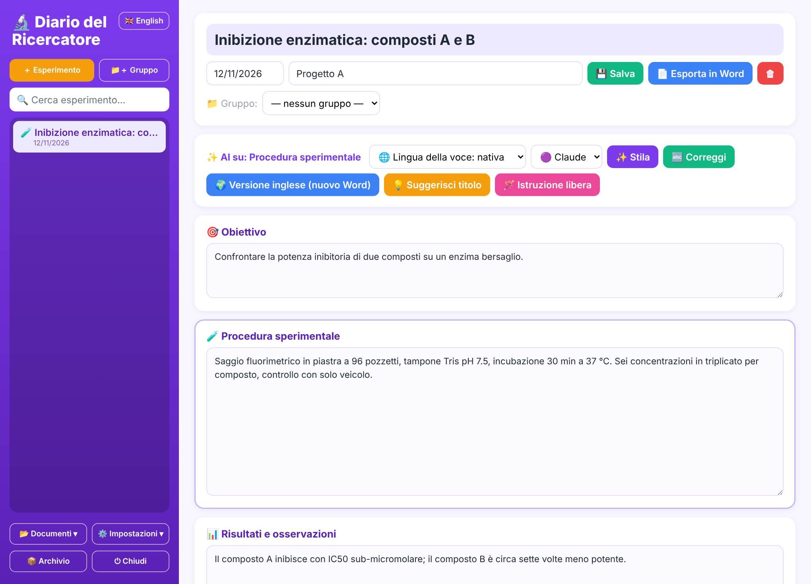
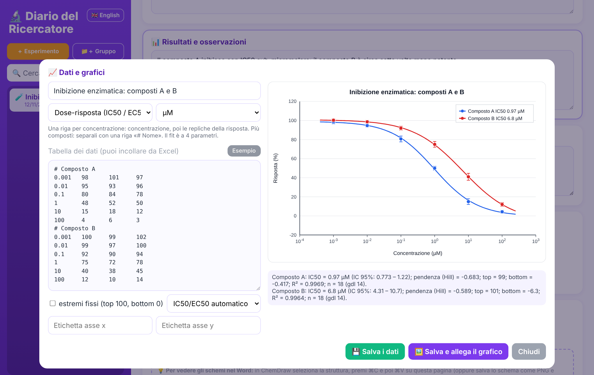
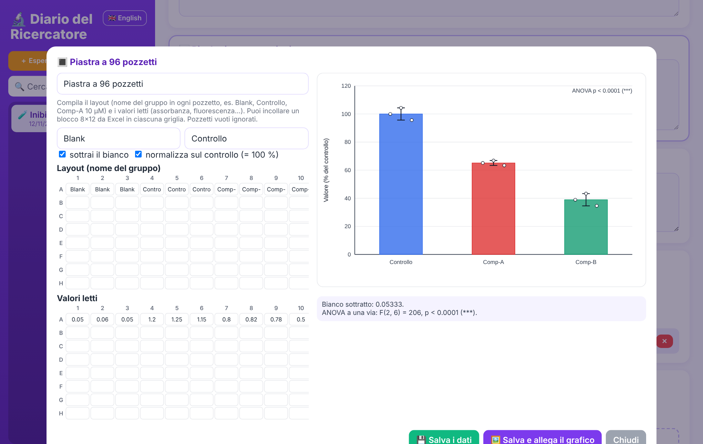
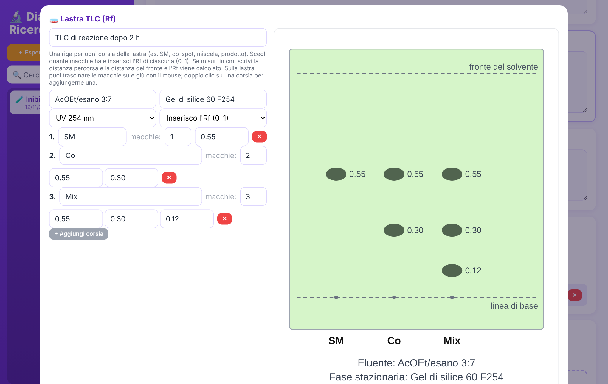

Anche un esperimento che non funziona è un dato.
Sci-Fail è la piattaforma, in sviluppo, dove i ricercatori pubblicano ciò che non ha funzionato, così nessun altro lo ripete. Intanto trovi qui il Diario del Ricercatore: lo strumento gratuito per documentare gli esperimenti ogni giorno.

Perché Sci-Fail
Gli articoli raccontano quasi solo gli esperimenti riusciti. Le reazioni che non funzionano, i saggi che non danno segnale e gli anticorpi che non si legano restano nei quaderni di laboratorio, e altri gruppi ripetono gli stessi errori.
Meno lavoro ripetuto
Sapere cosa è già stato provato, e con quali condizioni, fa risparmiare tempo, reagenti e finanziamenti.
Dati completi e strutturati
Condizioni, strutture, curve e motivo del fallimento in un formato consultabile, non in un PDF.
Per i ricercatori e per chi li finanzia
Università e aziende possono basare le decisioni anche su ciò che non ha funzionato.
Il Diario del Ricercatore
Un quaderno di laboratorio digitale che gira sul tuo computer. Lo scarichi, lo avvii e scrivi: niente account e niente abbonamenti.
- Sezioni e titoli pensati per il tuo settore
- Tabelle, curve e statistica già pronte
- Assistente di scrittura (Claude o Gemini) che non inventa dati
- Documento Word di ogni esperimento creato e aggiornato da solo, in cartelle ordinate per gruppo e sottogruppo
- Un unico documento con tutti gli esperimenti di un progetto, quando serve
- Scrivi nella tua lingua o in inglese; versione inglese in un documento a parte con un clic
- Interfaccia in italiano o in inglese
- Allegati ChemDraw, disegno di molecole e sincronizzazione con Google Drive
- Si aggiorna da solo: quando esce una versione nuova te lo dice e la installa
- Mac e Windows, open source (licenza MIT)

Uno strumento per ogni settore
Scegli il tuo campo al primo avvio: il Diario mostra gli strumenti che servono a te.
Chimica di sintesi
Reagenti, equivalenti e rese, lastre TLC disegnate con gli Rf, caratterizzazione (NMR, MS, p.f.), disegno di molecole e schemi ChemDraw.
Farmacologia e biochimica
Dose-risposta con IC50/EC50 e intervalli di confidenza, cinetica enzimatica, scheda del saggio.
Biologia molecolare e cellulare
Piastre a 96 pozzetti, qPCR (ΔΔCt), linee cellulari e anticorpi con lotto.
Microbiologia
Conte CFU, MIC, curve di crescita con tempo di raddoppio.
Materiali, fisica, ingegneria
Misure con fit (retta, polinomio, esponenziale, potenza), parametri di processo e strumenti.
Informatica e dati
Tabelle di parametri e metriche, versioni, seed e ambiente per la riproducibilità.

Calcoli che puoi controllare
Fit, intervalli di confidenza e test statistici sono stati confrontati con SciPy. Il codice è pubblico: puoi leggerlo e verificarlo.
Pensato per il laboratorio
Chi segue il lavoro vede i documenti sempre aggiornati, senza chiedere niente a nessuno.
- Per il supervisore: condividi la cartella di Google Drive e i Word degli esperimenti si aggiornano mentre lo studente scrive
- Ordine: documenti e allegati nelle stesse cartelle dei gruppi che vedi nel Diario
- Lastre TLC: scegli le corsie, sposta le macchie con il mouse, e la lastra finisce nel documento
- Fine progetto: tutti gli esperimenti in un solo Word, in ordine di data

Scarica il Diario
Gratuito e open source. Scarichi, fai doppio clic e scrivi.
🍎 Mac
- Decomprimi lo ZIP.
- Tasto destro su
Avvia Diario.command→ Apri (solo la prima volta; poi basta il doppio clic). - Il browser si apre sul Diario e sulla Scrivania compare l'icona Diario del Ricercatore: da lì in poi usi quella.
Se il Mac dice che non hai i permessi per aprire il file: apri il Terminale, scrivi chmod +x (con lo spazio), trascina dentro Avvia Diario.command e premi Invio. Poi ripeti il punto 2.
🪟 Windows
- Decomprimi lo ZIP.
- Doppio clic su
Avvia Diario.bat. Se manca Python prova a installarlo da solo (qualche minuto, una volta sola); se non ci riesce apre la pagina da cui scaricarlo. - Il browser si apre sul Diario e sul Desktop compare il collegamento Diario del Ricercatore.
Se Windows avvisa che il file non è riconosciuto: «Ulteriori informazioni» → «Esegui comunque».
Il Diario resta acceso in background: per spegnerlo usa il pulsante «Chiudi» in basso a sinistra. Quando esce una versione nuova compare un avviso e si aggiorna con un clic.
Privacy: i tuoi esperimenti restano in una cartella sul tuo computer. All'avvio il Diario controlla su GitHub se c'è una versione nuova (non invia nessun dato). Se attivi l'assistente di scrittura, il testo selezionato viene inviato al servizio che scegli (Claude o Gemini) con la tua chiave personale.
La piattaforma Sci-Fail sta arrivando
Un archivio dove pubblicare, in modo anonimo se vuoi, gli esperimenti che non hanno funzionato, con revisione tra colleghi e ricerca per struttura chimica. Per ora è privata: stiamo ascoltando i ricercatori.
Avvisami quando apre